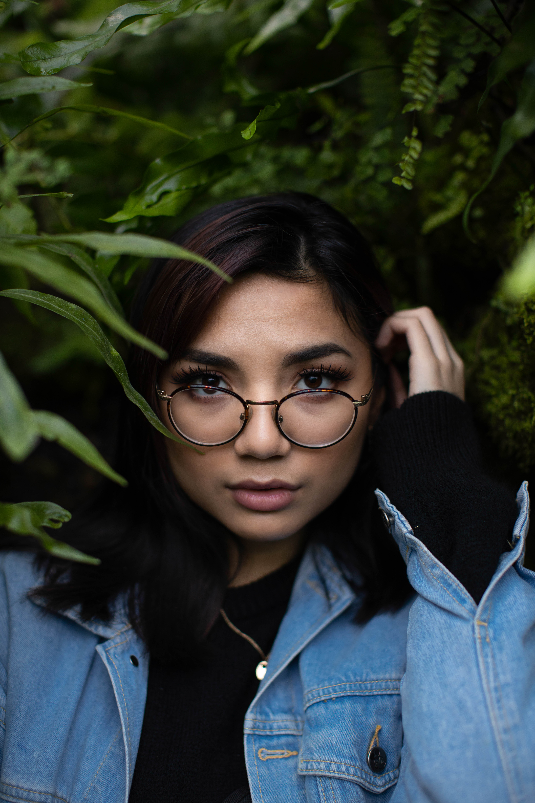

"Jenni, 2020"
Digital Photography // 2020 // Chicago, Illinois
I'd started getting in the habit of photographing my friends at the start of the year, hoping that by the summer I'd have an updated portrait portfolio and could start taking some freelance jobs again. My friend Jenni came to me one night asking for a shoot of her own because she hadn't been feeling very confident about herself lately. Thankfully she liked this image a lot. It feels pretty great when you can help your client see themselves differently, even for a second.